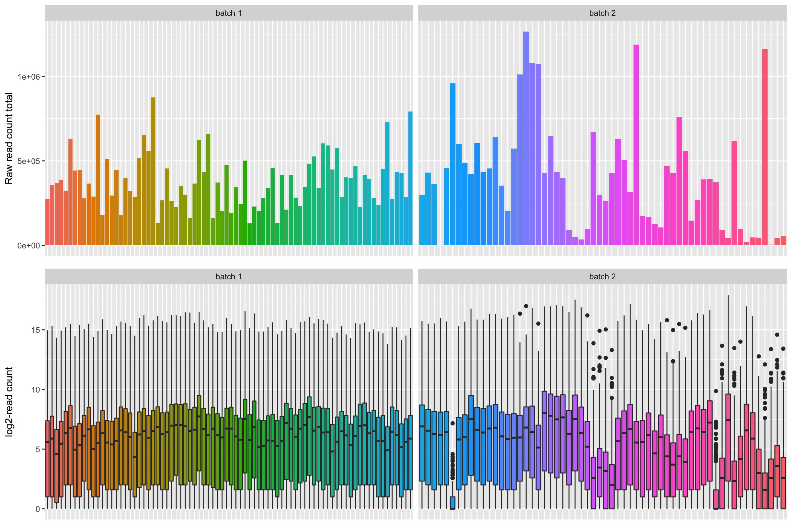
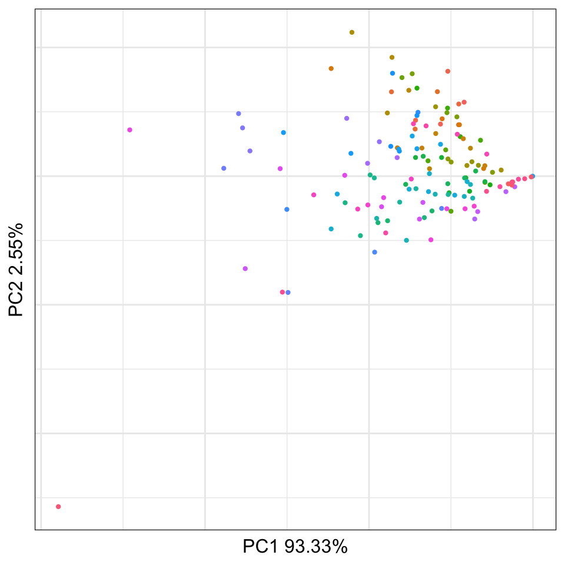
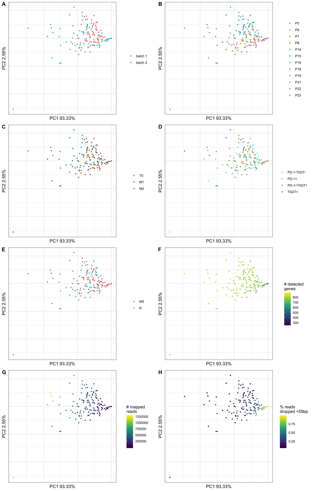
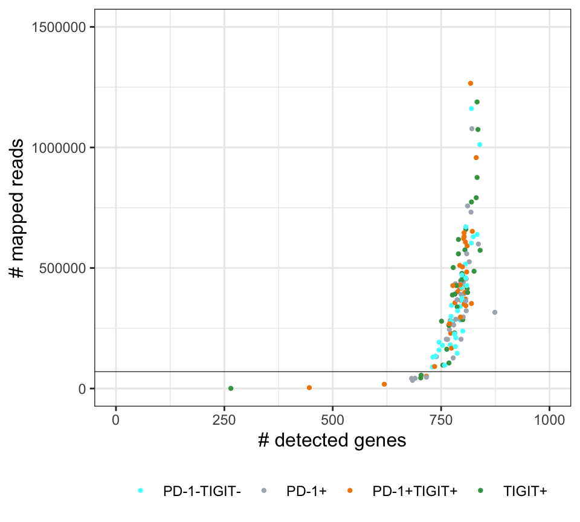

Last updated: 2020-01-14
Checks: 7 0
Knit directory: Simon_et_al_2020/
This reproducible R Markdown analysis was created with workflowr (version 1.6.0). The Checks tab describes the reproducibility checks that were applied when the results were created. The Past versions tab lists the development history.
Great! Since the R Markdown file has been committed to the Git repository, you know the exact version of the code that produced these results.
Great job! The global environment was empty. Objects defined in the global environment can affect the analysis in your R Markdown file in unknown ways. For reproduciblity it’s best to always run the code in an empty environment.
The command set.seed(20200113) was run prior to running the code in the R Markdown file. Setting a seed ensures that any results that rely on randomness, e.g. subsampling or permutations, are reproducible.
Great job! Recording the operating system, R version, and package versions is critical for reproducibility.
Nice! There were no cached chunks for this analysis, so you can be confident that you successfully produced the results during this run.
Great job! Using relative paths to the files within your workflowr project makes it easier to run your code on other machines.
Great! You are using Git for version control. Tracking code development and connecting the code version to the results is critical for reproducibility. The version displayed above was the version of the Git repository at the time these results were generated.
Note that you need to be careful to ensure that all relevant files for the analysis have been committed to Git prior to generating the results (you can use wflow_publish or wflow_git_commit). workflowr only checks the R Markdown file, but you know if there are other scripts or data files that it depends on. Below is the status of the Git repository when the results were generated:
Ignored files:
Ignored: .DS_Store
Ignored: .Rhistory
Ignored: .Rproj.user/
Ignored: analysis/.Rhistory
Ignored: code/.Rhistory
Ignored: data/.DS_Store
Ignored: output/.DS_Store
Ignored: output/.Rhistory
Untracked files:
Untracked: analysis/2019-02-22_RNA-seq_DE_1.Rmd
Untracked: analysis/2019-02-22_RNA-seq_DE_2.Rmd
Untracked: analysis/2019-02-22_RNA-seq_DE_3.Rmd
Untracked: analysis/2020-01-12_TCR-seq_EDA_2.Rmd
Untracked: data/RNA/
Untracked: data/TCR/
Untracked: data/clinical-data/
Untracked: data/gene-sets/
Untracked: misc/
Untracked: output/2019-02-22_RNA-seq_DE_1.RData
Untracked: output/2019-02-27_TCR-seq_QC.RData
Untracked: output/2019-02-28_TCR-seq_EDA.RData
Untracked: output/2020-01-12_TCR-seq_EDA_2.RData
Untracked: output/RNA_count.rds
Untracked: output/RNA_raw_count.rds
Untracked: output/TCR_count.rds
Untracked: output/TCR_pData.rds
Untracked: output/output_2019-02-22/
Unstaged changes:
Modified: analysis/index.Rmd
Note that any generated files, e.g. HTML, png, CSS, etc., are not included in this status report because it is ok for generated content to have uncommitted changes.
These are the previous versions of the R Markdown and HTML files. If you’ve configured a remote Git repository (see ?wflow_git_remote), click on the hyperlinks in the table below to view them.
| File | Version | Author | Date | Message |
|---|---|---|---|---|
| Rmd | a98e6a5 | ValentinVoillet | 2020-01-14 | Edits .Rmd (RNA-seq_QC & TCR-seq_QC) |
| html | 85b86fd | ValentinVoillet | 2020-01-14 | Add .html files |
| Rmd | 04be33d | ValentinVoillet | 2020-01-14 | Edits .Rmd (RNA-seq_QC & RNA-seq_EDA) |
| Rmd | c7fbfd8 | ValentinVoillet | 2020-01-14 | Edits .Rmd (RNA-seq_QC) |
| Rmd | 5555556 | ValentinVoillet | 2020-01-14 | Edits .Rmd (RNA-seq_QC) |
| Rmd | 0807a4a | ValentinVoillet | 2020-01-14 | Edits .Rmd (RNA-seq_QC) |
| Rmd | bb2cf40 | ValentinVoillet | 2020-01-14 | Edits .Rmd (RNA-seq_QC) |
File creation: February, 20th 2019
Update: January, 14th 2020
RNA was extracted from 12 patients. Alignment and quantification have been performed by Qiagen.
12 patients: P5, P6, P7, P8, P14, P15, P16, P18, P19, P21, P22 and P23;
Three time points: T0, M1 and M2;
One treatment: anti-PD1;
Four fractions: PD-1+TIGIT+, PD-1+, TIGIT+ and PD-1-TIGIT-;
Two outcomes: NR and R;
Two batches.
According to Qiagen, some samples have small library sizes (in which mainly reads were > 55bp); and others have libraries of correct size but mostly with reads < 55 bp.
There are 977 genes (6 genomic DNA controls) and 140 samples.

| Version | Author | Date |
|---|---|---|
| 85b86fd | ValentinVoillet | 2020-01-14 |
As observed by Qiagen, some samples have small library sizes - mainly in batch 2.

| Version | Author | Date |
|---|---|---|
| 85b86fd | ValentinVoillet | 2020-01-14 |

| Version | Author | Date |
|---|---|---|
| 85b86fd | ValentinVoillet | 2020-01-14 |
PC1 is clearly driven by the library size.

| Version | Author | Date |
|---|---|---|
| 85b86fd | ValentinVoillet | 2020-01-14 |
QC metrics seem to be good and consistent across samples (except some of them) w/
about 750 detected genes per sample;
about 5e+05 reads per sample.
Samples w/ a library size smaller than 70000 reads and % reads dropped, < 55 bp above 55% are removed leaving 121 samples for downstream analyses.
###--- Filtering
pData(raw.countData) %>%
filter(library.size < 70000 | `% reads dropped, < 55 bp` > .55) %>%
View() # in agreement w/ Qiagen QC - except from samples (subjective threshold)
pData(raw.countData) %>%
filter(library.size < 70000 | `% reads dropped, < 55 bp` > .55) %>%
pull(sample.id) -> sample.id.r
countData <- raw.countData[, setdiff(colnames(raw.countData), sample.id.r)]
countData <- countData[which(rownames(countData) != "TCF7" & rownames(countData) != "ITGAE"), ]
pData(countData) %>% View()
pData(countData) %>% dim()
saveRDS(object = countData, file = here("output", "RNA_count.rds"))
sessionInfo()R version 3.6.2 (2019-12-12)
Platform: x86_64-apple-darwin15.6.0 (64-bit)
Running under: macOS Mojave 10.14.6
Matrix products: default
BLAS: /Library/Frameworks/R.framework/Versions/3.6/Resources/lib/libRblas.0.dylib
LAPACK: /Library/Frameworks/R.framework/Versions/3.6/Resources/lib/libRlapack.dylib
locale:
[1] fr_FR.UTF-8/fr_FR.UTF-8/fr_FR.UTF-8/C/fr_FR.UTF-8/fr_FR.UTF-8
attached base packages:
[1] parallel stats graphics grDevices utils datasets methods
[8] base
other attached packages:
[1] here_0.1 edgeR_3.28.0 limma_3.42.0
[4] Biobase_2.46.0 BiocGenerics_0.32.0 data.table_1.12.8
[7] janitor_1.2.0 forcats_0.4.0 stringr_1.4.0
[10] dplyr_0.8.3 purrr_0.3.3 readr_1.3.1
[13] tidyr_1.0.0 tibble_2.1.3 ggplot2_3.2.1
[16] tidyverse_1.3.0
loaded via a namespace (and not attached):
[1] locfit_1.5-9.1 Rcpp_1.0.3 lubridate_1.7.4 lattice_0.20-38
[5] assertthat_0.2.1 zeallot_0.1.0 rprojroot_1.3-2 digest_0.6.23
[9] plyr_1.8.5 R6_2.4.1 cellranger_1.1.0 backports_1.1.5
[13] reprex_0.3.0 evaluate_0.14 httr_1.4.1 pillar_1.4.3
[17] rlang_0.4.2 lazyeval_0.2.2 readxl_1.3.1 rstudioapi_0.10
[21] whisker_0.4 rmarkdown_2.0 labeling_0.3 munsell_0.5.0
[25] broom_0.5.3 compiler_3.6.2 httpuv_1.5.2 modelr_0.1.5
[29] xfun_0.12 pkgconfig_2.0.3 htmltools_0.4.0 tidyselect_0.2.5
[33] workflowr_1.6.0 viridisLite_0.3.0 fansi_0.4.1 crayon_1.3.4
[37] dbplyr_1.4.2 withr_2.1.2 later_1.0.0 grid_3.6.2
[41] nlme_3.1-143 jsonlite_1.6 gtable_0.3.0 lifecycle_0.1.0
[45] DBI_1.1.0 git2r_0.26.1 magrittr_1.5 scales_1.1.0
[49] cli_2.0.1 stringi_1.4.5 farver_2.0.2 reshape2_1.4.3
[53] fs_1.3.1 promises_1.1.0 xml2_1.2.2 generics_0.0.2
[57] vctrs_0.2.1 cowplot_1.0.0 RColorBrewer_1.1-2 tools_3.6.2
[61] glue_1.3.1 hms_0.5.3 yaml_2.2.0 colorspace_1.4-1
[65] rvest_0.3.5 knitr_1.26 haven_2.2.0